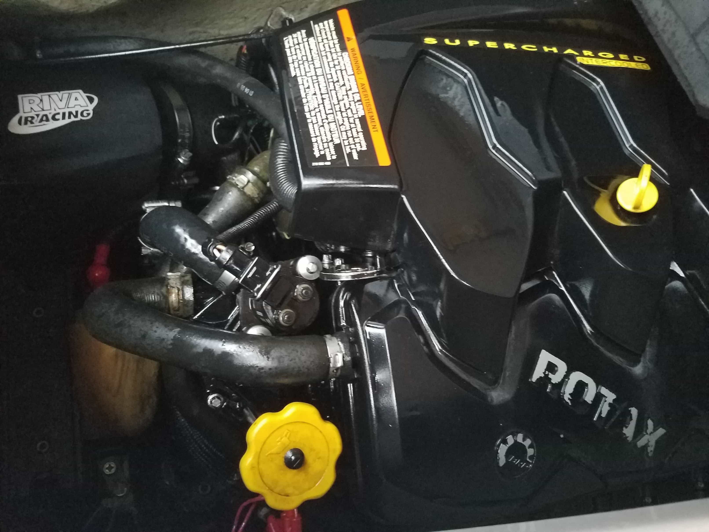
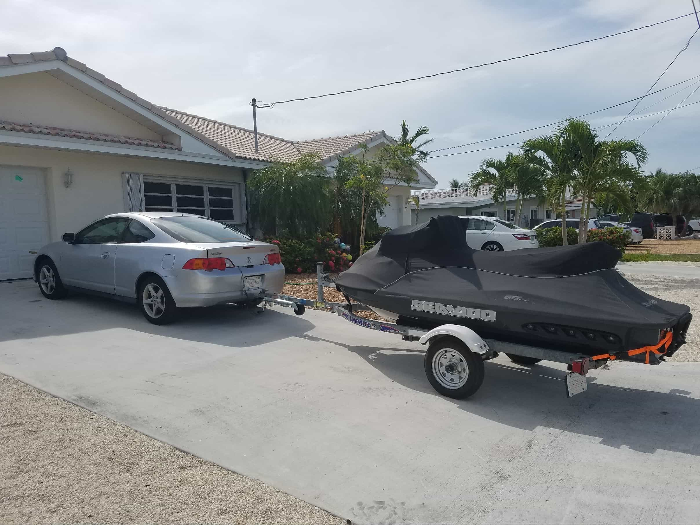
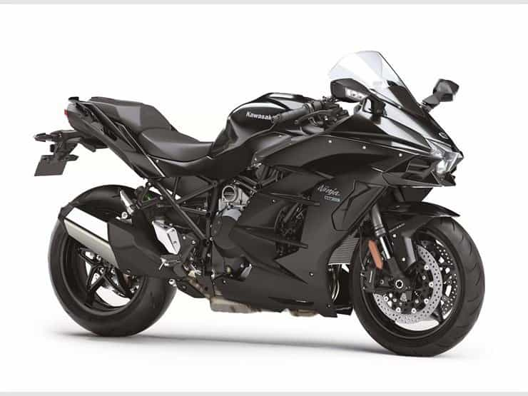
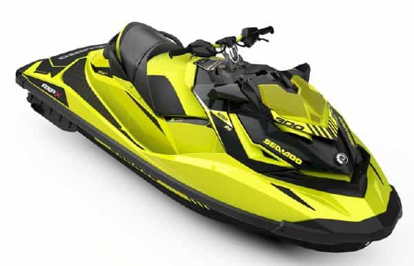
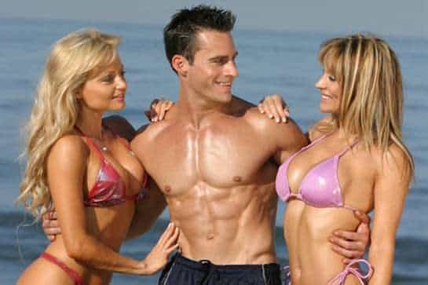
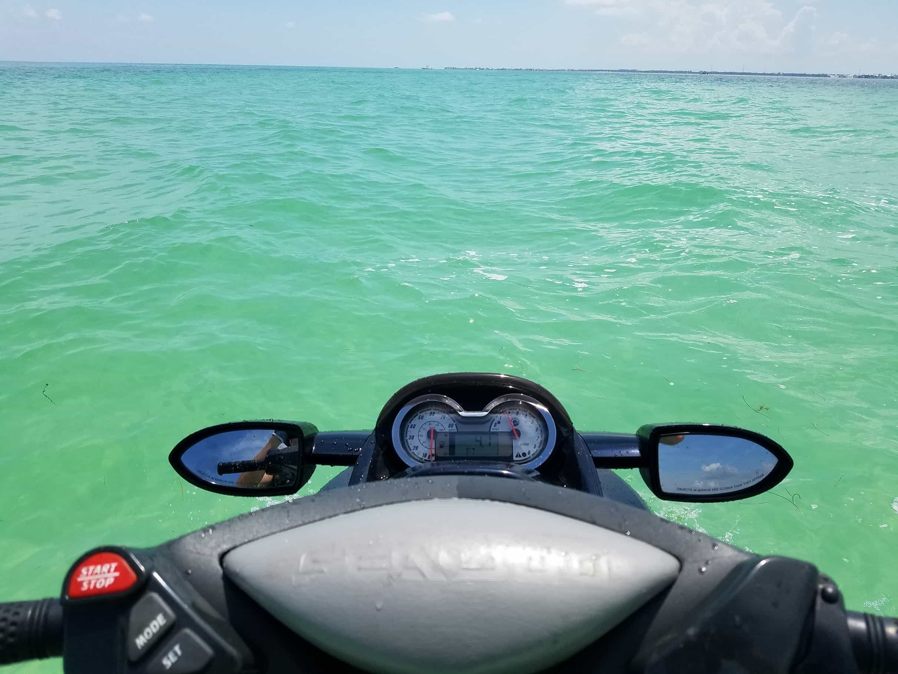

Have you always thought about getting a jet ski, but had your doubts about pulling the trigger? Take it from me, they are more fun than you might think—and they can also change your lifestyle. If you don’t already own one, here are some reasons why you should get a jet ski:
1. Girls LOVE them
You might think your Xbox is sexy and exciting, but the cute, thin brunette on the other side of your office does not. Yes, girls just wanna have fun—and jet skis are FUN. I have been out on the water with doctors that had brand new boats—and the hot 22-year-old blonde college girl they had with them literally jumped onto the back of my ski and said “take me out for a ride.” This has actually happened several times—because girls know that jet skis are fun and exciting—and they will know YOU are fun and exciting when they see you pull up to the beach on one.
A lot of times on the water, what you look like is irrelevant—you will have a masculine advantage over Johnny paddleboard or Kenny kayaker any day of the week. And given how superficial, flaky, narcissistic, and overly-picky American girls have become, there is nothing wrong with giving yourself a little competitive advantage in the attraction department.
2. They are the opposite of boring
Hot girls always want to do exciting things—they absolutely hate boredom. Getting out on the water and racing your supercharged jet ski at 70 mph towards the local beach bar is a really good way to attract them and keep them excited, because to do so is the opposite of being bored.
You know that cute blonde who is always quietly tanning over at your apartment pool by herself? Get her out on the water by saying “This place is boring, let’s get the hell out of here and get a tan while actually doing something EXCITING.” And, if you own a three-seater, you’re odds of getting her out are even better, as she’ll feel more comfortable by bringing her equally vapid friend as well.
Just make sure that when you get to the bar, you only have one or two while you are there. Many jet skis are high performance machines—and not like that slow, beat-up rental you once used on that trip to Aruba. Not only do you need to stay sharp behind the wheel, but you can easily get a DUI while out on the water.
3. They are masculine

You ever see a soy-drinking, Starbucks buying, yoga loving, #MeToo marching, feminist-supporting boy-bitch at the helm of a 300 horsepower jet ski? Me neither.
4. They are cheap to operate
The phrase “Jet Ski” is actually a generic brand term for “Personal Watercraft” (like Scotch Tape or Rollerblade) and represents watercraft manufactured by Kawasaki. The other two major brands—Bombardier and Yamaha—each manufacture “Sea-Doo and “Wave Runner” respectively.
My Sea-Doo has a 16 gallon gas tank, and using premium, it costs me about $55 to fill it up for the weekend; a little more if I am taking it on a really long ride and want to use more than one tank. The annual service and oil change at my local shop is $250. You likely spend more than that each year on Red Bulls for the Xbox.
In salt water, you have to spray and oil your ski after each ride—no matter what brand you own. Since I do that, the gas and the annual service fee are the only things I spend on it each year—there is nothing else I need to buy. I also keep my ski stored in a garage, and connect my battery to a trickle-charger in order to increase reliability. If you want, you can also spend a few extra dollars on upgrades to make it go faster; once you get used to some speed, 60 miles per hour will eventually seem “a little slow.”
5. You can trailer them anywhere

No… you do NOT need a Ford F–150 or Jeep 4×4 to trailer a large, three-seat jet ski. I drive an old two door, four cylinder Acura RSX—and it’s not even the beefed-up “Type S” model. Back in 2012, I had a $300 Curt trailer hitch welded on, and I have been towing my 900 pound Sea-Doo GTX with it ever since.
I have been on hundreds of boat ramps all up and down the east coast—and I have never had any towing problems. I have trailered my jet ski to-and-from Atlanta, Charleston, and the Florida Keys—all amazing places to be out on the water. I even evacuated from Hurricane Irma without breaking a sweat. If I can do all this with my little RSX, so can you.
Read your car’s owner’s manual and see what the maximum towing capacity and tongue weight is. Unless you drive a SmartCar, you’ll be surprised at how much you can actually tow.
6. You’ll create “bad-boy” street-bike excitement with less risk

Most ROK readers know that girls LOVE street bikes because they are dangerous—which makes the tatted up bad-boy biker dick seem all the sexier to them. Jet ski’s are dangerous as well (you can break ribs falling off at 40 mph), but a fast jet ski is still very exciting to girls.
A supercharged ski (Google what a supercharger is) can launch you and two petite sorority hotties with a cooler full of Lime-O-Rita’s across the water at nearly 70 mph—and it can reach that speed in just a few seconds. The intense acceleration that comes with a supercharged engine is what really turns women on—end of story.

As long as you stay alert and be responsible on the water, the risk of injury or death is arguably lower than on a street bike; no red lights that could be run, and nobody cutting you off without a turn signal. Street bikes are awesome, but you can still get those cute girls excited without having to weave in-and-out of text message prone traffic—over pothole-laden concrete—at 140 miles per hour.
7. They will improve your image

Think she’s attracted to you for all those intellectually stimulating conversations? Ha! With young girls in America, it’s all about image—how she sees you through her eyes. Again, jet skis are fun and exciting, so when you choose to leave the paddleboard at home and head out on your jet ski, it tells women something about your excitement level.
At work, I have to behave like a professional nerd to fit in with the climate. Despite this, my co-workers routinely ask, “Did you take your jet ski out this weekend?” Sure you can keep your paddleboard and inflatable kayak, but imagine how you would look to girls if all you did was “take it easy” on the water, then one day you showed up to the lake with a 300 horsepower RXP-X. Your new bad-ass image to them would be the equivalent of you seeing a girl lose 50 pounds overnight—it would create shock and attraction at the same time.
8. The amount of fun you’ll have is well worth the price

Houston—we are GO for launch!!
With a jet ski, the price-to-fun ratio is absolutely insane. Sure, you can buy a brand-new top of the line jet ski for $16,000, (or $24,000 in Australia) but I got mine used off of Craigslist from a guy in Baltimore. I knew I wanted a fast three-seater, had a particular model in mind, and used AllofCraigs.com to find it. The ski was only a few years old, in immaculate condition, and I paid the guy $5,000 cash in an envelope.
For the amount of fun I had, for the amount of memories I made, and for all the amazing places I have been to, that little white envelope was worth EVERY penny.
WAWA and water—doesn’t get much better for Pepe
You don’t live near an ocean or the Gulf? There is most likely a lake or river within a few hours’ drive away that will give you an extremely fun day for less than $100. And trust me—jet skiing on a lake is much more fun than it sounds. You can also get a good tow-tube for about $60 to $100, then grab some sodas and drag the kiddies (slowly) around your local lake. The smiles on their faces will be priceless.
9. They are easy to sell
Almost everyone wants a boat, but even small ones can be expensive to own and operate. You could be out enjoying that same gorgeous water in a few weeks without having a major financial burden on your hands. The demand for jet skiis has always been relatively high, and if you ever get stuck financially and need to sell yours quickly, just turn to Craigslist. If you keep it in good shape, it will likely be sold in a few days or weeks.
10. You will meet new people—in real life
Jet skiing to a destination is fun, but jet skiing to a destination with other people is really fun. Many people own jet skis, and I have met tons of other skiers out on the water during group rides. A good ice breaker is to complement people on the color and model of their jet ski—even if you believe yours looks better and runs faster. Remember: TV and video games are fun, but it’s also important to get out in the world and meet new people in real life—not just an avatar through a gaming headset.
Conclusion
Your life needs balance, and part of that is to get out there and enjoy the world (and also attract women). Jet skis are a fun and cheap way to help do all that. If you don’t already own one, save up $6,000 (or get a personal loan from a Credit Union) and buy a good used jet ski off Craigslist. Look for a supercharged model (they are much faster and well worth the money) that is clean with no rust or fading, and has around 100 hours or less on it. Take care of your machine, be respectful and responsible on the water, and you will have years of great memories.
Even if jet skiing is not your thing, most ROK readers know how important it is to “get out there” and start living life to the fullest. A jet ski will not necessarily change your life, but it can help you get more out of it.
Read Next: How To Take A Girl Canoeing